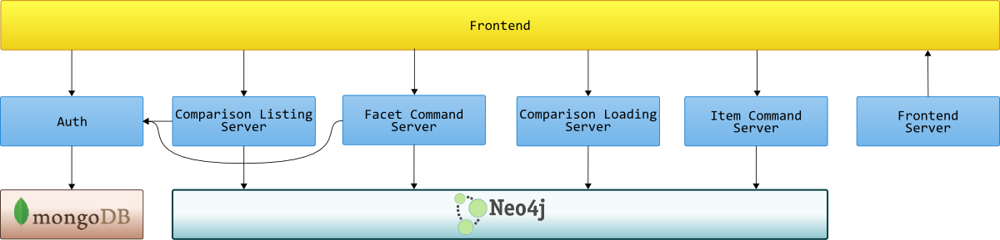

Web Components
===
Microservices
Tim Perry
Tech Lead & Open-Source Champion at Softwire

Web Components
<div class="bs-example bs-navbar-top-example">
<nav class="navbar navbar-default navbar-inverse" role="navigation">
<div class="container-fluid">
<div class="navbar-header">
<button type="button" class="navbar-toggle collapsed"
data-toggle="collapse"
data-target="#bs-example-navbar-collapse-6">
<span class="sr-only">Toggle navigation</span>
<span class="icon-bar"></span>
<span class="icon-bar"></span>
<span class="icon-bar"></span>
</button>
<a class="navbar-brand" href="/">Brand</a>
</div>
<div class="collapse navbar-collapse" id="bs-example-navbar-collapse-6">
<ul class="nav navbar-nav">
<li class="active"><a href="/1">Home</a></li>
<li><a href="/2">Link</a></li>
<li><a href="/3">Link</a></li>
</ul>
</div>
</div>
</nav>
</div>
Web Components
<nav-bar>
<a href="/">Brand</a>
<ul>
<li><a href="/1">Home</a></li>
<li><a href="/2">Link</a></li>
<li><a href="/3">Link</a></li>
</ul>
</nav-bar>
Web Components
- <Template>
- HTML Imports
- Shadow DOM
- Custom Elements
<Template>
<template id="template1">
<img src="/default-image.png" />
<h3>Cool image!</h3>
</template>
<Template>
<template id="template1">
<img src="/default-image.png" />
<h3>Cool image!</h3>
</template>
<script type="text/javascript">
var template = document.querySelector("#template1");
var content = document.importNode(template.content, true);
document.body.appendNode(content);
</script>
HTML Imports
index.html
<head>
<link rel="import"
href="import.html" />
</head>
import.html
Some HTML!
<style>
h1 { font-size: 500%; }
</style>
<script>
window.aThing = function () {
...
}
</script>
Shadow DOM
Some irrelevant content
<div id="myDiv">Some irrelevant content<div>
<script type="text/javascript">
var div = document.querySelector("#myDiv")
var shadow = div.createShadowRoot();
shadow.innerHTML = '<h3>Dom-invisible headline!</h3>';
</script>
Shadow DOM
Real content
<div id="myDiv2">Real content</div>
<script type="text/javascript">
var div = document.querySelector("#myDiv2")
var shadow = div.createShadowRoot();
shadow.innerHTML = "<i>Originally: <content></content></i>";
</script>
Custom Elements
document.registerElement('nav-bar');
<nav-bar>
<ul>
<li>Home</li>
<li>Link</li>
<li>Link</li>
</ul>
</nav-bar>
Custom Elements
var NavBarPrototype = Object.create(HTMLElement.prototype);
NavBarPrototype.updateContent = function () { ... }
document.registerElement("nav-bar", {
prototype: NavBarPrototype
});
...
document.querySelector("nav-bar").updateContent();
Custom Elements
var NavBarPrototype = Object.create(HTMLElement.prototype);
NavBarPrototype.createdCallback = function () { ... }
NavBarPrototype.attachedCallback = function () { ... }
NavBarPrototype.detachedCallback = function () { ... }
NavBarPrototype.attributeChangedCallback = function () { ... }
document.registerElement('nav-bar', {
prototype: NavBarPrototype
});
Nav-Bar Web Component
<nav-bar>
<a href="/">Brand</a>
<ul>
<li><a href="/1">Home</a></li>
<li><a href="/2">Link</a></li>
<li><a href="/3">Link</a></li>
</ul>
</nav-bar>
Nav-Bar Web Component
<template id="navBarTemplate">
<div class="bs-example bs-navbar-top-example">
<nav class="navbar navbar-default navbar inverse">
...
<content></content>
...
</nav>
</div>
</template>
<script>
var NavBarPrototype = Object.create(HTMLElement.prototype);
NavBarPrototype.createdCallback = function () {
var template = document.querySelector("#navBarTemplate");
var content = document.importNode(template.content, true);
this.createShadowRoot().appendNode(content);
};
document.registerElement('nav-bar', {
prototype: NavBarPrototype
});
</script>
Let's see it in action
Actually using this?
(From Are We Componentized Yet?)
Microservices
Monoliths

Microservices

Core principles:
- Many standalone processes
- Organised around functionality
- All highly decoupled
- Each with a single responsibility
Deploying all these?
But performance?!?
Let's see it in action

These are not technically the same thing
Two Shared Principles
- Encapsulation by default
- Interaction through a common medium
Modifiability
- Change things easily, and with confidence
- Use the best tools for the job
- Iteratively evolve your implementation
Thank you
Tim Perry
Tech Lead & Open-Source Champion at Softwire